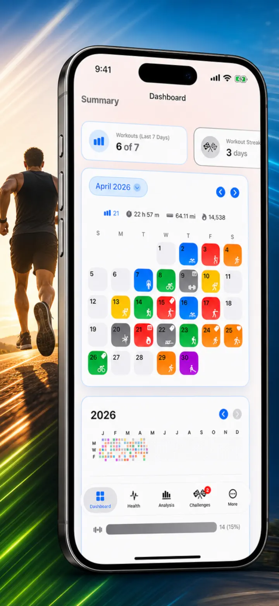
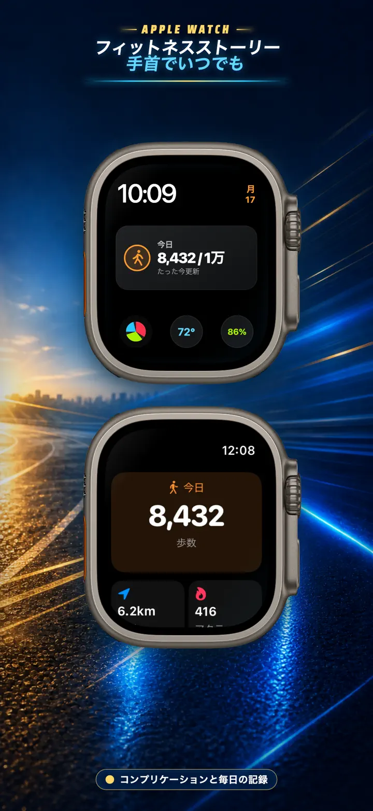
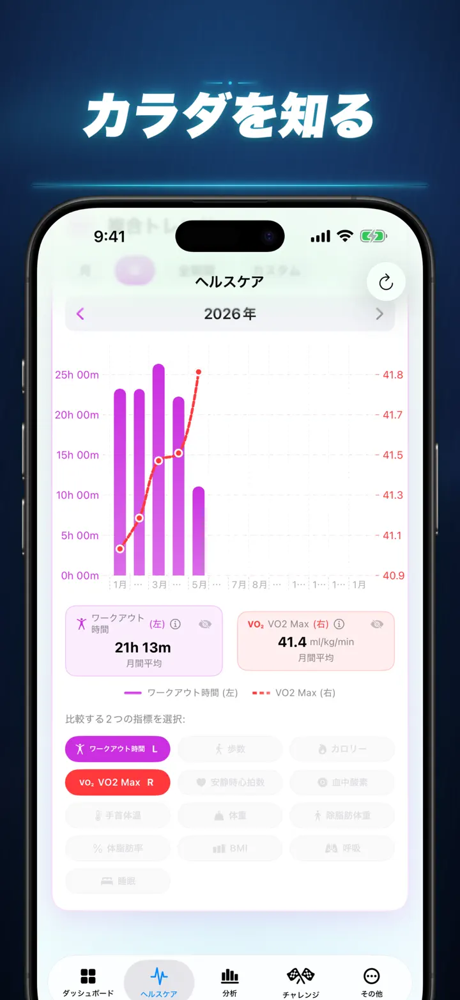
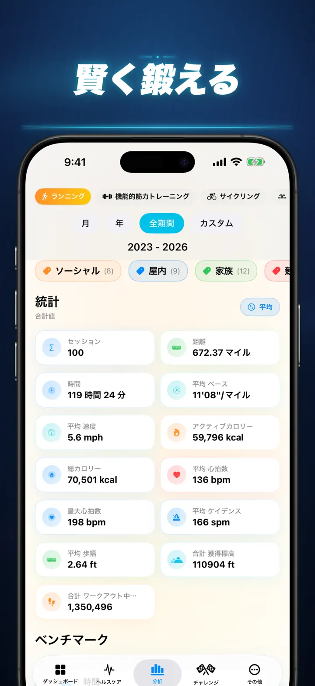
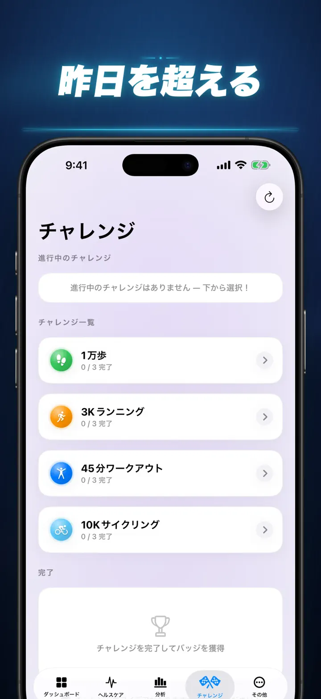
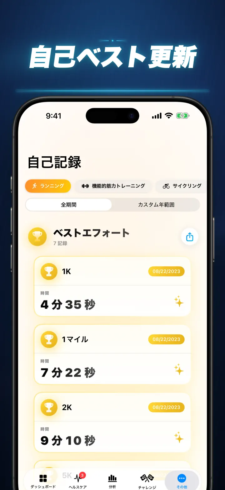
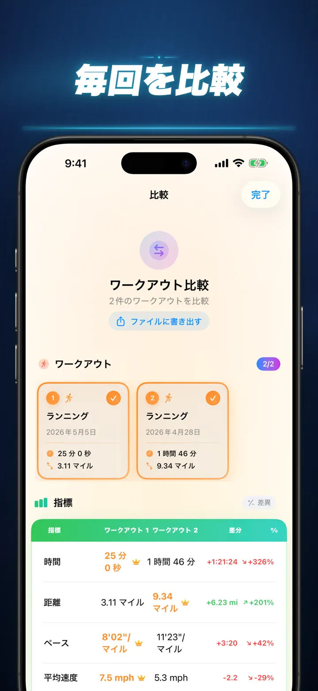
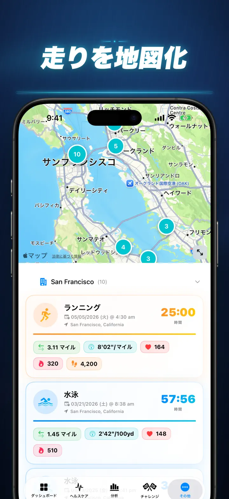
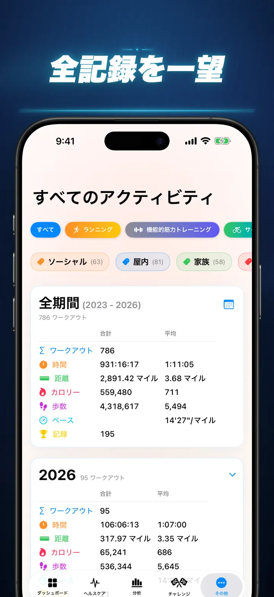

フィットネスストーリー
ワークアウトの洞察を解放
Apple Watch に登場：どの文字盤でも今日の歩数が見え、「今日」画面では距離・カロリー・階数も。データは Apple Health から直接。
App Storeからダウンロード
アプリについて
もう感覚に頼るのはやめましょう。フィットネスストーリーは、Apple Healthのデータを iOS最高峰の詳細分析に変換します。アカウント登録不要。サーバー通信なし。あなたのフィットネスの軌跡を、すべてビジュアルで。
睡眠ステージの確認、ランニングケイデンスの分析、マラソン自己ベストへの挑戦——あなたの努力にふさわしいオールインワンダッシュボードがここにあります。
Apple Healthに同期するあらゆるデバイスやアプリに対応——Apple Watch、Garmin、Polar、Suunto、Zwiftなど。
プロ仕様の分析機能
- トレンド＆ベンチマークチャート：箱ひげ図で中央値、四分位数、外れ値をスポーツ種目ごとに表示。
- 詳細フィルター：時間帯、距離帯、所要時間、ペース帯、獲得標高、ケイデンス、ストライド長で履歴を絞り込み。
- ランキング機能：ワンタップで今日の指標（距離、ペース、心拍数など）を全履歴と比較。「上位15%」に入ったかどうか、すぐにわかります。
- コントリビューショングラフ：GitHub風ヒートマップでワークアウト履歴を一覧表示。タップで日別の詳細統計も確認できます。
ワークアウト詳細を再定義
- スマートマップ：屋外ルートをスピード、標高、心拍ゾーンで色分け表示。（中国地図補正対応）
- 詳細スプリット分析：KMまたはマイル単位で、各ラップのペース・標高・心拍数・ケイデンスを表示。
- 心拍ゾーン：年齢と安静時心拍数に基づくカスタムゾーン1〜5の滞在時間を可視化。
- リッチコンテキスト：写真、リッチテキストメモ、努力度評価（1〜10）、カスタムタグをワークアウトに追加。
ヘルスコマンドセンター
- Apple Watchが計測するすべてのデータを一か所に集約。日次・週次・年次トレンドで表示：
- 心臓の健康：安静時心拍数、VO2 Max（年齢調整済み）、血中酸素、呼吸数。
- 体組成：体重、体脂肪率、除脂肪体重、BMIをトレンド付きで表示。
- アクティビティ＆リカバリー：歩数（時間帯別内訳）、アクティブカロリー vs 基礎カロリー、手首温度偏差。
- 高度な睡眠トラッキング：深い睡眠、コア、レム、覚醒ステージを毎晩ビジュアル化。
- 相関オーバーレイ：複数のヘルス指標を重ねて、睡眠が心拍数に与える影響や、体重がVO2 Maxに与える影響を確認。
比較＆競争
- ワークアウト比較：最大10件のワークアウトを並べて比較。スプリットごとに差分パーセンテージ（例：「+1.5% 速い」）を表示。
- 比較エクスポート：他のツールで分析したい方に。ワークアウト比較データをエクスポート可能！
- 自己記録：1K、5K、10K、ハーフ、マラソン、カスタム距離の自動トラッキング。金・銀・銅のトロフィーを獲得。
- ストーリータイムライン：すべてのマイルストーン、記録、ワークアウトを時系列で表示。
あなたのデータを、どこでも
- グローバルマップ：これまで運動したすべての場所をクラスター化されたインタラクティブな世界地図で表示。
- パワフルエクスポート：全履歴（またはカスタム範囲）をCSVまたはJSONでエクスポート。スプリットデータ、身体指標、メタデータを完全網羅。
- iCloud同期：お気に入り、タグ、メモ、評価がすべてのデバイス間で即時同期。
- プライバシー最優先：隠れたサーバーはありません。データはデバイスとプライベートiCloudにのみ保存。
- あなたの汗は物語を語っています。今こそ読み解く時です。フィットネスストーリーをダウンロードしましょう。
フィットネスストーリーをダウンロードして、あなたの可能性を引き出そう！
Privacy Policy: https://masawata.net/privacy-policy.html Terms Of Service: https://www.apple.com/legal/internet-services/itunes/dev/stdeula/
スクリーンショット








フィットネスストーリー
Apple Watch に登場：どの文字盤でも今日の歩数が見え、「今日」画面では距離・カロリー・階数も。データは Apple Health から直接。
App Storeからダウンロード